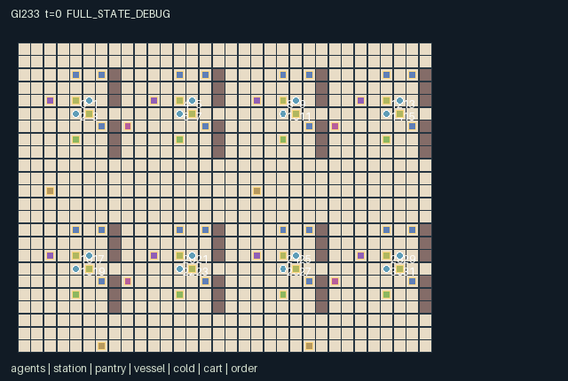

GI233 / SPATIAL
Market Square Fermentation Kitchens
Release verification episode
Untrained uniform legal actions. Actual JAX state sampled along the full original episode; full-state debug camera. No human performance or learning claim.

Run this game
crucibles play --game 233
Start Python locally, then open the address printed by the terminal. Installation, multiplayer, takeover and keyboard controls →
Objective, rewards & ending
Exact task contract
{
"objective": "Eight crews fulfill their distinct three-ticket queues through shared ingredient supply, culture exchange, preparation, fermentation and clean finishing.",
"natural_termination": "Natural completion occurs when every one of the eight customer order counts reaches 3. A mismatched dish is not delivered. H=640 otherwise truncates the ongoing kitchen.",
"interaction": "Shared station contamination changes other cooks' food and future tools; starter transfer changes ferment timing and recipe matching; cold slots and carts compete for spatial capacity; heavy vessels require a nearby bracing partner.",
"observation_access": "Actors and objects use L1 radius 5; actor slots retain the nearest four plus self. Customer tickets are visible only to their own four-person crew. Announce snapshots that crew's current recipe and culture into a four-tick visible actor message; nearby cooks can read it, but it may become stale after a delivery."
}Declared per-step reward bounds: -2 to 4. Observability: partially_observable.
Rules
- Pick up a vessel, fill it at a market crate, wash it, and grind grain before inoculation. Fruit does not require grinding.
- Culture 0 ferments for six steps; culture 1 takes ten. Finish ripe food at a hob and match a customer's recipe and culture.
- Dirty utensils contaminate shared stations and other food. Mills begin dirty; Clean changes the actual shared station and own tool.
- Heavy pots need another actor choosing Brace within one tile of the carrier to be picked up or moved.
- A cold store has two real container slots. Stored ripe food ages once every three ticks; occupied slots prevent other storage.
- Carts move through the horizontal aisles and wait when people block them; people cannot step onto cart positions.
- Tickets belong to one crew. Announce sends a visible four-tick snapshot; culture and vessel handoffs occur physically.
- Scene and literal scripts are authored hypotheses; no actual play, trajectory or training has been executed.
Original mechanism document (historical status wording retained)
# Market Square Fermentation Kitchens
Status: **AUTHORED_NOT_EXECUTED**. Candidate identity: game-v3-00233. Source split: train. No final test or previous candidate outcome was an input.
## Native contract and human controls
A=32, O=544, U=20, H=640. Every one of the 32 actor rows is independently controllable through one scalar int32 action. Ambient entities are not counted as agents. A human/AI/group assignment chooses the same native joint-action vector; no alternative UI dynamics are supplied. The source is the complete native kernel, and scene.json is complete declarative presentation data. JaxMARL adapter integration, actual keyboard/click controls, replay, animation, JIT/vmap, throughput, training and transfer remain unexecuted and unaccepted.
Movement is a cardinal one-cell proposal with boundary clipping. Multiple people may occupy a tile; this is an explicit broad-walkway abstraction. Visible objects and terrain govern interaction conditions. Masks describe capability/inventory permissions, not a promise that a distant or blocked operation succeeds. Out-of-range or mask-invalid codes become no-op deterministically. Spatially inapplicable legal attempts cost the stated work cost and change no targeted object. Joint actions are captured together; movement precedes ordered work, and work resolves actor IDs in ascending order. This tie rule is fixed before any execution and can affect scarce-resource competition.
Eight four-person crews occupy a 32 by 24 market partitioned by short walls with door gaps. Each crew has a sink, mill, finishing hob and service counter, while four moving carts and four two-slot cold stores serve the connected square. Eight finite crates alternate grain and fruit. Sixteen actual portable vessels (one light and one heavy per crew) begin empty; filling uses one finite portion. Raw food must be washed. Grain then needs grinding, while fruit can proceed directly from washed to inoculated. Starter culture 0 takes 6 fermentation advances; culture 1 takes 10. Fermentation advances before work. Once ripe or finished, a portion ages each step, or every third step while occupying a cold slot; age 25 changes it to spoiled. Cold storage consumes a real slot and fixes the container's position until another cook picks it up.
Mills begin dirty. Washing, grinding and finishing combine utensil/station contamination, which changes the vessel and the cook's tool. A dirty tool also marks the shared station dirty for later actors; cleaning is a separate action at the nearest station and clears that cook's tool. A clean sink can remove food contamination during the raw-to-washed step. All cooks can exchange starter culture, and a service counter permits physical vessel handoff. Heavy pickup and movement require another actor's simultaneous Brace within distance 1 of the carrier. A cook's source crew and a counter's customer crew need not match. A matched service increments that customer's finite queue and flips its next recipe/culture, with the next deadline 72 ticks later. Station operations require distance 1; an announced ticket is a finite-lived snapshot, not a live remote feed.
## Action legend
- 0: Wait.
- 1: Move north.
- 2: Move east.
- 3: Move south.
- 4: Move west.
- 5: Fill carried empty vessel from nearby market crate.
- 6: Brace a nearby heavy-pot carrier.
- 7: Pick up nearby uncarried vessel.
- 8: Put carried vessel down.
- 9: Wash raw portion at a sink.
- 10: Grind washed grain at a mill.
- 11: Inoculate prepared portion with own starter.
- 12: Finish ripe portion at a finishing hob.
- 13: Serve matching finished portion at a counter.
- 14: Clean nearest station and own utensil.
- 15: Give starter culture to nearest adjacent cook.
- 16: Store carried vessel in nearby available cold slot.
- 17: Announce own crew's current customer request.
- 18: Discard carried portion and empty vessel.
- 19: Hand carried vessel to adjacent cook at a service counter.
## Observation and role-view contract
Actors and objects use L1 radius 5; actor slots retain the nearest four plus self. Customer tickets are visible only to their own four-person crew. Announce snapshots that crew's current recipe and culture into a four-tick visible actor message; nearby cooks can read it, but it may become stale after a delivery.
The first scalar of the self block is actor ID/(A-1). Each nearest-actor slot begins with visibility then actor ID/(A-1); absent slots are all zero. Actor slots use the four smallest L1 distances with ID tie breaking; self is always visible through its self block. All other entity blocks use original entity order, visibility flag, normalized absolute x/y, then the listed attributes; hidden rows are zero. Terrain layout is fixed public knowledge, while changing object states use declared local visibility. The renderer must filter entity and event displays by role visibility; full-state diagnostics are a separate labeled view. Public scene metadata does not add policy input.
- [0, 11): Self: actor ID/31, x/31, y/23, crew/7, (carried vessel+1)/16, starter, dirty utensil, message/4, announced recipe, announced culture, t/640 (self).
- [11, 55): Four nearest actor slots, 11 each: visible, ID/31, x/31, y/23, crew/7, (vessel+1)/16, starter, dirty utensil, message/4, announced recipe, announced culture (local).
- [55, 215): 32 station rows, 5 each: visible, x/31, y/23, kind/3, dirty (local).
- [215, 255): 8 market rows, 5 each: visible, x/31, y/23, stock/24, recipe (local).
- [255, 431): 16 vessel rows, 11 each: visible, x/31, y/23, stage/7, (recipe+1)/2, culture, progress/10, age/25, contaminated, heavy, (cold slot+1)/8 (local).
- [431, 447): 4 cold-store rows, 4 each: visible, x/31, y/23, occupied slots/2 (local).
- [447, 463): 4 cart rows, 4 each: visible, x/31, y/23, direction -1 or 1 (local).
- [463, 519): 8 ticket rows, 7 each: own-crew visibility, x/31, y/23, recipe, culture, fulfilled/3, clipped(deadline-t,-640,640)/640; other crews hidden (self).
- [519, 544): Row-major 5 by 5 edge-clamped partition patch centered on actor; 0 floor, 1 wall (local).
## Rewards, bounds and persistent consequences
Every legal work attempt (code >=5) costs the actor 0.01. Successful delivery pays the server 2 for clean food or 0.25 for contaminated food, plus 0.5 if on time. Each of the customer's four crew members receives 0.25 for the same delivery, regardless of who cooked it. A newly contaminating processing event costs the processing actor 0.15; discarding a nonempty portion costs 0.4. There is no payment for repeatedly storing, transferring, inoculating or cleaning. A customer has only three remaining tickets, so no actor can receive more than three customer bonuses in one step; own delivery return is at most 2.5. The range [-2,4] contains these simultaneous components.
Rewards are float32[A]. Observations are explicitly float32[A,O]; normalized bounds are [-1,1]. Declared reward bounds are [-2, 4], analytical containment bounds rather than empirical results or performance gates. Actor/group identity, positions, tool changes and real object levels bind to native state in manifest.json and scene.json; no scripted display transition substitutes for a kernel transition.
## Termination and declared source invariants
Natural completion occurs when every one of the eight customer order counts reaches 3. A mismatched dish is not delivered. H=640 otherwise truncates the ongoing kitchen. A live call advances t exactly once. Natural termination has priority at H. A terminal call is absorbing: all state and observation leaves, clock and terminal cause are preserved; reward is zero and every done row is true. There is no raw auto-reset.
Actors, carts, stations and containers stay within the stated map bounds. Each carried vessel has at most one actor owner; each actor carries at most one vessel. Each cold slot contains at most one vessel. Pantry stock stays 0..24; vessel stage 0..7, progress 0..10, age 0..25 and slot -1..7; order count 0..3. Dirty flags are genuine shared state. Food and vessel state survive movement, handoff and storage. Containers are not agents; all 32 cook rows are separately controllable. Direction -1 and an overdue deadline create the observation lower bound -1.
The manifest declares the complete fixed-key state tree. Numeric/bool state leaves use int32/float32/bool. PRNG keys remain external trajectory provenance and are not duplicated in state. The source's reset randomness is only the eight initial private requested recipe bits from the supplied key; initial requested cultures and all map geometry are deterministic; raw_step consumes no additional random draws. No signed-int or PRNG distribution substitution is made. Human-readable invariants above have not been numerically checked; the optional machine invariant list is empty to avoid inventing an unsupported invariant-check dialect.
## Prospective strategies and fixed diagnostics
A crew can spend one partner action to clean a shared mill before a batch, or rush a contaminated lower-quality portion while preserving labor for another task. Partners may exchange starter to match a remote customer's announced ticket, or use cold storage to hold a ripe component while preparing a complementary delivery. Cold slots, cart traffic and heavy-pot support create timing costs. The two complete scripts differ only in actor 1 cleaning the mill before actor 0 grinds. This is also the paired hypothesis: the same later grind should change actor 0's utensil and vessel contamination, even if the sampled customer ticket does not match and no serving occurs.
playthrough.json contains two complete literal joint-action arrays at seed 23311, plus one pair whose entire continuation differs in exactly one actor action at one step. All are UNEXECUTED_AUTHOR_HYPOTHESIS. Their finite lengths are diagnostic scopes, not claims of finishing the game. Conditions, delays and intended state changes are source reasoning; legality during rollout, effects, rewards, solvability and human usability remain unverified. There is no adaptive policy, seed search, measured effect size or expected-success threshold.
## Literal source evidence
- Station, vessel and private-ticket state: candidate.py:58 — `s = {'t': jnp.array(0, jnp.int32), 'done': jnp.array(False), 'terminated': jnp.array(False), 'tiles': tiles, 'pos': pos, 'active': jnp.ones((32,), jnp.bool_), 'carry': jnp.full((32,), -1, jnp.int32), 'starter': ids % 2, 'dirty_tool': jnp.zeros((32,), jnp.bool_), 'message': jnp.zeros((32,), jnp.int32), 'message_recipe': jnp.zeros((32,), jnp.int32), 'message_culture': jnp.zeros((32,), jnp.int32), 'seen': jnp.zeros((32, 4), jnp.int32), 'agent_vis': jnp.zeros((32, 32), jnp.bool_), 'station_pos': station_pos, 'station_kind': jnp.arange(32, dtype=jnp.int32) % 4, 'station_dirty': jnp.arange(32, dtype=jnp.int32) % 4 == 1, 'station_active': jnp.ones((32,), jnp.bool_), 'station_vis': jnp.zeros((32, 32), jnp.bool_), 'pantry_pos': center + jnp.array([-2, 0], jnp.int32), 'pantry_stock': jnp.full((8,), 24, jnp.int32), 'pantry_recipe': crew % 2, 'pantry_active': jnp.ones((8,), jnp.bool_), 'pantry_vis': jnp.zeros((32, 8), jnp.bool_), 'vessel_pos': jnp.repeat(center, 2, axis=0) + jnp.tile(jnp.array([[0, 0], [1, 1]], jnp.int32), (8, 1)), 'vessel_stage': jnp.zeros((16,), jnp.int32), 'vessel_recipe': jnp.full((16,), -1, jnp.int32), 'vessel_culture': jnp.zeros((16,), jnp.int32), 'vessel_progress': jnp.zeros((16,), jnp.int32), 'vessel_age': jnp.zeros((16,), jnp.int32), 'vessel_bad': jnp.zeros((16,), jnp.bool_), 'vessel_heavy': jnp.arange(16, dtype=jnp.int32) % 2 == 1, 'vessel_slot': jnp.full((16,), -1, jnp.int32), 'vessel_active': jnp.ones((16,), jnp.bool_), 'vessel_vis': jnp.zeros((32, 16), jnp.bool_), 'cold_pos': cold, 'cold_used': jnp.zeros((4,), jnp.int32), 'cold_active': jnp.ones((4,), jnp.bool_), 'cold_vis': jnp.zeros((32, 4), jnp.bool_), 'cart_pos': jnp.array([[2, 11], [18, 11], [6, 23], [22, 23]], jnp.int32), 'cart_direction': jnp.array([1, -1, 1, -1], jnp.int32), 'cart_active': jnp.ones((4,), jnp.bool_), 'cart_vis': jnp.zeros((32, 4), jnp.bool_), 'order_pos': center + jnp.array([0, 3], jnp.int32), 'order_recipe': jax.random.randint(key, (8,), 0, 2).astype(jnp.int32), 'order_culture': crew % 2, 'order_count': jnp.zeros((8,), jnp.int32), 'order_deadline': jnp.full((8,), 72, jnp.int32), 'order_active': jnp.ones((8,), jnp.bool_), 'order_vis': jnp.zeros((32, 8), jnp.bool_), 'event_serve': jnp.zeros((32,), jnp.bool_), 'event_contaminate': jnp.zeros((32,), jnp.bool_), 'event_waste': jnp.zeros((32,), jnp.bool_), 'event_ripen': jnp.zeros((16,), jnp.bool_)}`
- Own-crew ticket visibility: candidate.py:23 — `s['order_vis'] = jnp.arange(32, dtype=jnp.int32)[:, None] // 4 == jnp.arange(8, dtype=jnp.int32)[None, :]`
- Timed fermentation: candidate.py:83 — `ripe = (s['vessel_stage'] == 4) & (progress >= target)`
- Actual cold-storage aging: candidate.py:86 — `aging = ((s['vessel_stage'] == 5) | (s['vessel_stage'] == 6)) & ((s['vessel_slot'] < 0) | (n['t'] % 3 == 0))`
- Partner-enabled heavy motion: candidate.py:98 — `heavy = (s['carry'] >= 0) & s['vessel_heavy'][jnp.maximum(s['carry'], 0)]`
- Shared contamination path: candidate.py:132 — `contaminate = process & dirty & ~z['vessel_bad'][pot]`
- Culture changes fermentation: candidate.py:139 — `inoculate = (a[i] == 11) & ready`
- Physical occupied cold slot: candidate.py:159 — `store = (a[i] == 16) & (cd[fridge] <= 1) & jnp.any(free)`
- Matching and recipient reward: candidate.py:171 — `quality = jnp.where(z['vessel_bad'][pot], 0.25, 2.0) + 0.5 * (z['t'] <= z['order_deadline'][customer])`
- Raw terminal absorption: candidate.py:198 — `n = jax.tree.map(lambda new, old: jnp.where(s['done'], old, new), n, s)`
## Provenance and limits
Only the 21 actual authorized input files in author_input_freeze.json were read. The controlling population/family237 input sets A and H. Older copied population notes were not read. No old source, result, IR, training/selection/heldout file, memory file, network, local model, remote model API or other author feedback was used. The inherited genre direction comes from this batch's independent_family_principles.json and design brief. No supplied upstream reference snapshot or upstream code was read or copied: Craftax mechanics and Pgx board APIs are not claimed as implementations, and PureJaxRL/Craftax PPO baselines are neither new game libraries nor replacements for the frozen learner.
Author-side checks are standard-library AST parsing, literal schema/shape declarations, JSON, byte lengths and SHA256 only. Supplied validator modules were read as input text and were not executed. No import of candidate.py, JAX, NumPy, reset, raw_step, observe or legal_actions occurred. This package establishes authored source/data identity only, not accepted R0/M0, numerical parity, learnability, strategic non-isomorphism, animation acceptance, scientific benefit or transfer.
Commands
Roles & abilities
agent_0 Kitchen crew 00; actor 000; initial prep cook with culture 0; individually controllable
agent_1 Kitchen crew 00; actor 001; initial fermenter with culture 1; individually controllable
agent_2 Kitchen crew 00; actor 002; initial porter with culture 0; individually controllable
agent_3 Kitchen crew 00; actor 003; initial finisher with culture 1; individually controllable
agent_4 Kitchen crew 01; actor 004; initial prep cook with culture 0; individually controllable
agent_5 Kitchen crew 01; actor 005; initial fermenter with culture 1; individually controllable
agent_6 Kitchen crew 01; actor 006; initial porter with culture 0; individually controllable
agent_7 Kitchen crew 01; actor 007; initial finisher with culture 1; individually controllable
agent_8 Kitchen crew 02; actor 008; initial prep cook with culture 0; individually controllable
agent_9 Kitchen crew 02; actor 009; initial fermenter with culture 1; individually controllable
agent_10 Kitchen crew 02; actor 010; initial porter with culture 0; individually controllable
agent_11 Kitchen crew 02; actor 011; initial finisher with culture 1; individually controllable
agent_12 Kitchen crew 03; actor 012; initial prep cook with culture 0; individually controllable
agent_13 Kitchen crew 03; actor 013; initial fermenter with culture 1; individually controllable
agent_14 Kitchen crew 03; actor 014; initial porter with culture 0; individually controllable
agent_15 Kitchen crew 03; actor 015; initial finisher with culture 1; individually controllable
agent_16 Kitchen crew 04; actor 016; initial prep cook with culture 0; individually controllable
agent_17 Kitchen crew 04; actor 017; initial fermenter with culture 1; individually controllable
agent_18 Kitchen crew 04; actor 018; initial porter with culture 0; individually controllable
agent_19 Kitchen crew 04; actor 019; initial finisher with culture 1; individually controllable
agent_20 Kitchen crew 05; actor 020; initial prep cook with culture 0; individually controllable
agent_21 Kitchen crew 05; actor 021; initial fermenter with culture 1; individually controllable
agent_22 Kitchen crew 05; actor 022; initial porter with culture 0; individually controllable
agent_23 Kitchen crew 05; actor 023; initial finisher with culture 1; individually controllable
agent_24 Kitchen crew 06; actor 024; initial prep cook with culture 0; individually controllable
agent_25 Kitchen crew 06; actor 025; initial fermenter with culture 1; individually controllable
agent_26 Kitchen crew 06; actor 026; initial porter with culture 0; individually controllable
agent_27 Kitchen crew 06; actor 027; initial finisher with culture 1; individually controllable
agent_28 Kitchen crew 07; actor 028; initial prep cook with culture 0; individually controllable
agent_29 Kitchen crew 07; actor 029; initial fermenter with culture 1; individually controllable
agent_30 Kitchen crew 07; actor 030; initial porter with culture 0; individually controllable
agent_31 Kitchen crew 07; actor 031; initial finisher with culture 1; individually controllable
Observation permissions
Training receives only the original observation rows. Role cameras use declared visibility; debug cameras are explicitly marked. Local benchmark records log debug exposure and role takeover history.
Exact observation layout
[
{
"slice": [
0,
11
],
"meaning": "Self: actor ID/31, x/31, y/23, crew/7, (carried vessel+1)/16, starter, dirty utensil, message/4, announced recipe, announced culture, t/640",
"visibility": "self"
},
{
"slice": [
11,
55
],
"meaning": "Four nearest actor slots, 11 each: visible, ID/31, x/31, y/23, crew/7, (vessel+1)/16, starter, dirty utensil, message/4, announced recipe, announced culture",
"visibility": "local"
},
{
"slice": [
55,
215
],
"meaning": "32 station rows, 5 each: visible, x/31, y/23, kind/3, dirty",
"visibility": "local"
},
{
"slice": [
215,
255
],
"meaning": "8 market rows, 5 each: visible, x/31, y/23, stock/24, recipe",
"visibility": "local"
},
{
"slice": [
255,
431
],
"meaning": "16 vessel rows, 11 each: visible, x/31, y/23, stage/7, (recipe+1)/2, culture, progress/10, age/25, contaminated, heavy, (cold slot+1)/8",
"visibility": "local"
},
{
"slice": [
431,
447
],
"meaning": "4 cold-store rows, 4 each: visible, x/31, y/23, occupied slots/2",
"visibility": "local"
},
{
"slice": [
447,
463
],
"meaning": "4 cart rows, 4 each: visible, x/31, y/23, direction -1 or 1",
"visibility": "local"
},
{
"slice": [
463,
519
],
"meaning": "8 ticket rows, 7 each: own-crew visibility, x/31, y/23, recipe, culture, fulfilled/3, clipped(deadline-t,-640,640)/640; other crews hidden",
"visibility": "self"
},
{
"slice": [
519,
544
],
"meaning": "Row-major 5 by 5 edge-clamped partition patch centered on actor; 0 floor, 1 wall",
"visibility": "local"
}
]Entity visibility & attributes
[
{
"id": "agents",
"kind": "agent",
"count": 32,
"position": [
"pos"
],
"active": [
"active"
],
"visibility": [
"agent_vis"
],
"attributes": [
{
"state_path": [
"carry"
],
"meaning": "Carried vessel ID, -1 if empty-handed",
"display": "number"
},
{
"state_path": [
"starter"
],
"meaning": "Starter culture 0 or 1",
"display": "category"
},
{
"state_path": [
"dirty_tool"
],
"meaning": "Utensil contamination",
"display": "flag"
},
{
"state_path": [
"message"
],
"meaning": "Request announcement lifetime, 0 to 4",
"display": "bar"
},
{
"state_path": [
"message_recipe"
],
"meaning": "Announced recipe, meaningful while message is positive",
"display": "category"
},
{
"state_path": [
"message_culture"
],
"meaning": "Announced culture, meaningful while message is positive",
"display": "category"
}
]
},
{
"id": "station",
"kind": "object",
"count": 32,
"position": [
"station_pos"
],
"active": [
"station_active"
],
"visibility": [
"station_vis"
],
"attributes": [
{
"state_path": [
"station_kind"
],
"meaning": "0 sink, 1 mill, 2 finish, 3 service counter",
"display": "category"
},
{
"state_path": [
"station_dirty"
],
"meaning": "Shared station contamination",
"display": "flag"
}
]
},
{
"id": "pantry",
"kind": "resource",
"count": 8,
"position": [
"pantry_pos"
],
"active": [
"pantry_active"
],
"visibility": [
"pantry_vis"
],
"attributes": [
{
"state_path": [
"pantry_stock"
],
"meaning": "Remaining portions, at most 24",
"display": "bar"
},
{
"state_path": [
"pantry_recipe"
],
"meaning": "0 grain or 1 fruit supply",
"display": "category"
}
]
},
{
"id": "vessel",
"kind": "object",
"count": 16,
"position": [
"vessel_pos"
],
"active": [
"vessel_active"
],
"visibility": [
"vessel_vis"
],
"attributes": [
{
"state_path": [
"vessel_stage"
],
"meaning": "0 empty, 1 raw, 2 washed, 3 ground, 4 ferment, 5 ripe, 6 finished, 7 spoiled",
"display": "category"
},
{
"state_path": [
"vessel_recipe"
],
"meaning": "-1 empty, 0 grain or 1 fruit",
"display": "category"
},
{
"state_path": [
"vessel_culture"
],
"meaning": "Inoculated culture 0 or 1",
"display": "category"
},
{
"state_path": [
"vessel_progress"
],
"meaning": "Fermentation progress, 0 to 10",
"display": "bar"
},
{
"state_path": [
"vessel_age"
],
"meaning": "Ripe-food exposure age, 0 to 25",
"display": "bar"
},
{
"state_path": [
"vessel_bad"
],
"meaning": "Food contamination",
"display": "flag"
},
{
"state_path": [
"vessel_heavy"
],
"meaning": "Paired transport required",
"display": "flag"
},
{
"state_path": [
"vessel_slot"
],
"meaning": "Cold-store slot, -1 outside storage",
"display": "number"
}
]
},
{
"id": "cold",
"kind": "landmark",
"count": 4,
"position": [
"cold_pos"
],
"active": [
"cold_active"
],
"visibility": [
"cold_vis"
],
"attributes": [
{
"state_path": [
"cold_used"
],
"meaning": "Occupied physical slots, 0 to 2",
"display": "number"
}
]
},
{
"id": "cart",
"kind": "object",
"count": 4,
"position": [
"cart_pos"
],
"active": [
"cart_active"
],
"visibility": [
"cart_vis"
],
"attributes": [
{
"state_path": [
"cart_direction"
],
"meaning": "Horizontal travel direction -1 or 1",
"display": "direction"
}
]
},
{
"id": "order",
"kind": "landmark",
"count": 8,
"position": [
"order_pos"
],
"active": [
"order_active"
],
"visibility": [
"order_vis"
],
"attributes": [
{
"state_path": [
"order_recipe"
],
"meaning": "Required recipe 0 or 1",
"display": "category"
},
{
"state_path": [
"order_culture"
],
"meaning": "Required culture 0 or 1",
"display": "category"
},
{
"state_path": [
"order_count"
],
"meaning": "Orders fulfilled, 0 to 3",
"display": "number"
},
{
"state_path": [
"order_deadline"
],
"meaning": "Current absolute deadline tick",
"display": "number"
}
]
}
]Actual verification & provenance
Per-game execution receipt
{
"game": "gi233",
"status": "PASS",
"verification_revision": 2,
"source_sha256": "fd4a347bdc58f26b246b58ab16d39d0868868117f6f88df13da5deb80ca743b6",
"seed": 20261101,
"runtime": {
"jax": "0.4.38",
"numpy": "1.26.4",
"devices": [
"TFRT_CPU_0"
]
},
"dimensions": {
"num_agents": 32,
"observation_size": 544,
"num_actions": 20,
"max_steps": 640
},
"checks": {
"eager_reset": {
"status": "PASS",
"seconds": 5.501627683639526
},
"observation_spaces_legal_masks": {
"status": "PASS",
"seconds": 0.693112850189209
},
"eager_step": {
"status": "PASS",
"seconds": 4.358973026275635
},
"jit_reset": {
"status": "PASS",
"seconds": 0.690333366394043
},
"jit_step": {
"status": "PASS",
"seconds": 2.3451433181762695
},
"eager_jit_integer_parity_float_measurement": {
"status": "PASS",
"seconds": 0.002003908157348633
},
"jit_vmap_reset": {
"status": "PASS",
"seconds": 0.5876927375793457
},
"jit_vmap_step": {
"status": "PASS",
"seconds": 4.3468945026397705
},
"outer_autoreset_api": {
"status": "PASS",
"seconds": 3.852346420288086
},
"full_original_horizon_episode_and_render": {
"status": "PASS",
"seconds": 4.250304937362671
}
},
"human_scores": null,
"browser_controls": "PENDING",
"failures": [],
"elapsed_seconds": 27.24871301651001,
"float_parity_max_abs": 5.960464477539063e-08,
"numerical_parity": "UNDETERMINED_NONZERO_FLOAT_DIFFERENCE",
"raw_terminal_absorbing": "PASS",
"terminal_outer_reset": "PASS",
"episode_steps": 640,
"scripted_random_returns": [
-3.1699999291449785,
-3.4099999237805605,
-4.569999909028411,
-3.2399999275803566,
-4.579999914392829,
-3.2699999269098043,
-3.0999999307096004,
-3.2699999269098043,
-3.159999929368496,
-3.5499999206513166,
-3.1899999286979437,
-3.179999928921461,
-3.399999924004078,
-3.2699999269098043,
-3.249999927356839,
-3.249999927356839,
-3.5599999260157347,
-3.489999921992421,
-3.279999926686287,
-3.2899999264627695,
-3.7599999215453863,
-3.299999926239252,
-3.089999930933118,
-3.1699999291449785,
-3.05999993160367,
-3.349999925121665,
-3.729999916628003,
-4.289999915286899,
-3.159999929368496,
-3.299999926239252,
-4.309999914839864,
-3.7299999222159386
],
"terminal": true,
"demo_information": "FULL_STATE_DEBUG",
"demo_frames": 26,
"render_roles_checked": 32
}Chromium control verification
{
"game": "gi233",
"status": "PASS",
"human_scores": null,
"engineering": true,
"checks": [
"catalog_selected_and_real_native_reset",
"keyboard_native_direction_command",
"dom_queue_and_native_step",
"second_participant_ownership_and_native_joint_step",
"all_roles_individually_controllable_no_role_cap",
"explicit_debug_camera",
"release_to_pure_ai_without_reset",
"close_session_preserves_log"
],
"ui_sha256": "96243f9de144b80b5e20a114330e2206bdcd58d3efc9c6f13bbc08b95cacc14d",
"keyboard_action_id": 1,
"seconds": 5.832600355148315
}Original identity and file hashes
{
"id": 233,
"key": "gi233",
"title": "Market Square Fermentation Kitchens",
"summary": "",
"tags": [],
"family": "spatial",
"dimensions": {
"num_agents": 32,
"observation_size": 544,
"num_actions": 20,
"max_steps": 640
},
"source_sha256": "fd4a347bdc58f26b246b58ab16d39d0868868117f6f88df13da5deb80ca743b6",
"manifest_sha256": "6627fac2a99b7c8362200f2c7d8cca5e3b0cff24e9787a945243351027fd5474",
"files": [
{
"file": "candidate.py",
"sha256": "fd4a347bdc58f26b246b58ab16d39d0868868117f6f88df13da5deb80ca743b6",
"bytes": 17966,
"origin": "work/exp_2/game_incubator_v3/sources/game-v3-00233/attempt_00/candidate.py"
},
{
"file": "manifest.json",
"sha256": "6627fac2a99b7c8362200f2c7d8cca5e3b0cff24e9787a945243351027fd5474",
"bytes": 23638,
"origin": "work/exp_2/game_incubator_v3/sources/game-v3-00233/attempt_00/manifest.json"
},
{
"file": "scene.json",
"sha256": "d5f7b63d23ad8f93d656b746dc94383f043fb5109bd2560a492e665031011f8b",
"bytes": 10821,
"origin": "work/exp_2/game_incubator_v3/sources/game-v3-00233/attempt_00/scene.json"
},
{
"file": "mechanism.md",
"sha256": "3a472734a8a05383f334c22a5bced0b95577ad0e8ee2c0c35fe02fdf941edfda",
"bytes": 14964,
"origin": "work/exp_2/game_incubator_v3/sources/game-v3-00233/attempt_00/mechanism.md"
},
{
"file": "playthrough.json",
"sha256": "6d18c0c15780c6c05f767c7ffff709bd421896f12d97c6d3c10a98cd6d8d7d88",
"bytes": 41187,
"origin": "work/exp_2/game_incubator_v3/sources/game-v3-00233/attempt_00/playthrough.json"
}
],
"original_status": "SOURCE_ONLY",
"original_saved_replay": false,
"release_validation": "PASS",
"human_scores": null,
"browser_validation": "PASS"
}